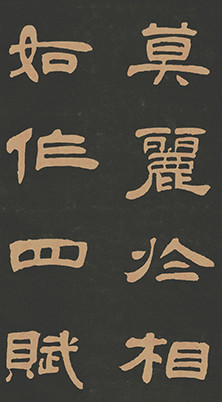

Clerical Script
Official script is a milestone in the history of calligraphy. The generation of official script is of great significance in the history of imitation. It is a great change and liberation. It not only facilitates communication, but also creates favorable conditions for the emergence of later scripts.
The Origin
Legend says that Cheng Miao of the Qin dynasty turned the circular and balanced form of strokes of seal script into one of regulated and angular strokes for speeding up writing, thus clerical script was born. The most apparent feature of the clerical script is that the beginning of horizontal lines is akin to the head of a silkworm while the finish is akin to the tail of a wild goose. Its form appears flat and square, as if the characters were gliding in the sky. In the Han dynasty, almost all official documents were written in clerical script. In the Eastern Han dynasty, steles were also mainly carved in clerical script.The emergence of the clerical script ended the era of ancient writing that has spanned nearly two thousand years, while opening a new generation for calligraphy art which looks for beautification
